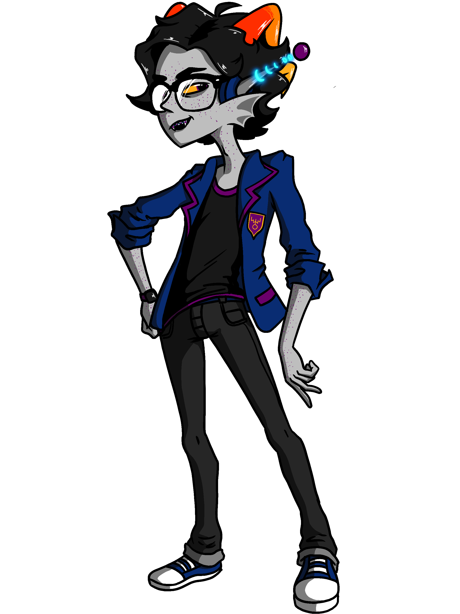
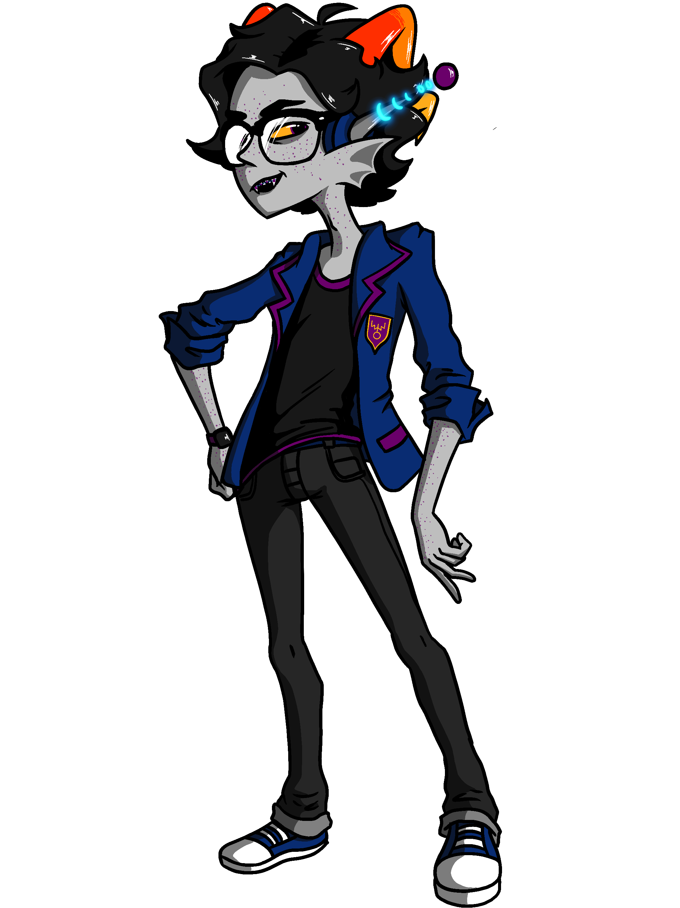
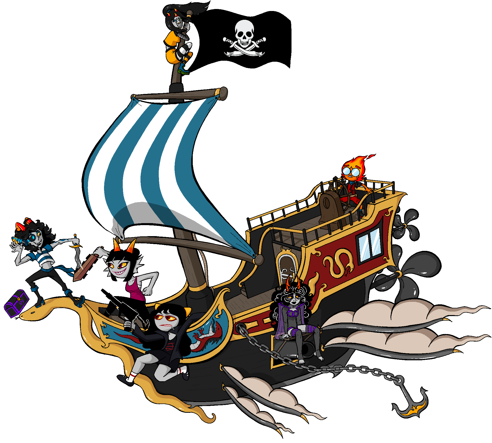
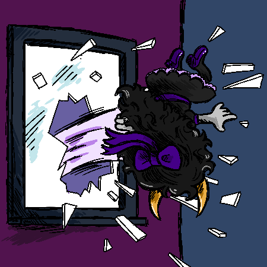
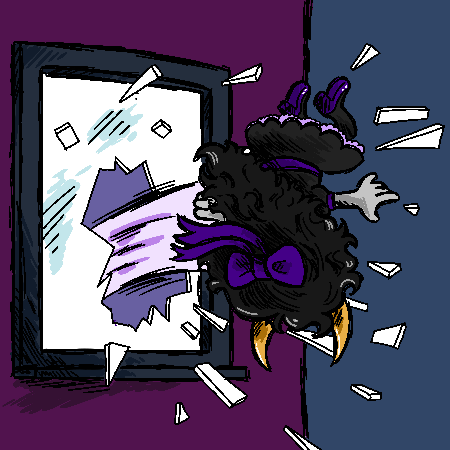

Wanna see some extra art and behind the scenes? Here you will find an assortment of prototypes and early designs plus some extra current bonus art!
Click on an image to see it full sized.
==================================
EARLY DESIGNS
==================================
Check out some early designs of the Cerulean Snake!EARLY DESIGNS
==================================
First ever Image I drew of Chever "The Cerulean Snake" Stalii. This was drawn back in 2011, Making them 10+ years old, jesus fuck!

Snake has gone through a few redesigns, and was once even a seadweller. I ultimately settled on a final design as a cerulean.
 


==================================
EARLY CERULEAN MOTLEY CREW DESIGNS
==================================
Here is some of my earlier character designs for the crew!EARLY CERULEAN MOTLEY CREW DESIGNS
==================================
Final design for Snake

A mock up of the crew. You can see some differences in the final product.

Some more mockups.


==================================
HOW I DRAW
==================================
Wanna see how I draw the panels? Here's a couple fun videos.HOW I DRAW
==================================
All of my panels are designed in procreate on an iPad pro 12" and animated in Photoshop CS6 Extended. Click on the videos to play them.
Page 8
==================================
BONUS ART
==================================
Here is some random art I have produced/acquired from others during the making of this
adventure.
You'll
find
all sorts of stuff to tickle your funny bone. BONUS ART
==================================

 



All art is licensed under a Creative Commons Attribution-NonCommercial-ShareAlike 4.0 International License. Homestuck and relating themes are owned by Andrew Hussie & Viz Media.